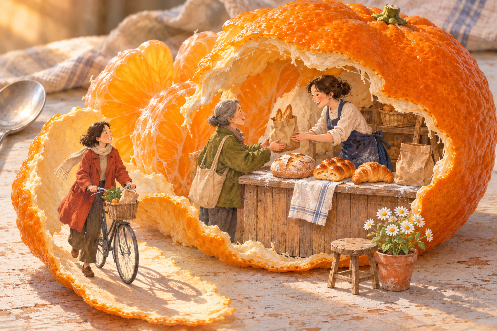

剥开的橘皮卷成清晨的小摊，面包袋正在两个人之间传递。

打开媒体文件 · 下载源码与提示词 · 来源与验证
ChatGPT 内置图像生成
1536 × 1024 PNG，原始字节数与 SHA-256 已核。生成一次；完成原图目视与独立审查。原创虚构想象插画，不是现实摄影；无动画、无音轨。
未使用现实人物、品牌或私人素材；未作互联网相似作品穷尽检索，AI 输出不构成独创性或版权法律保证。公开复用许可未选定。